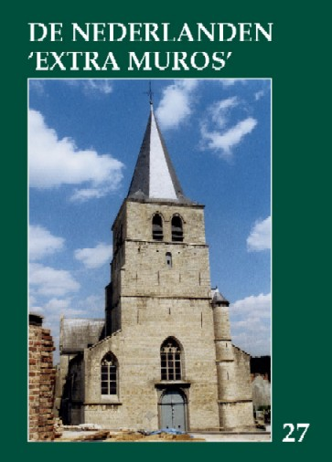

> nieuwsbrief > 22e jg. - 2e trimester
2005
| Bijdragen over: | Tip |
In het spoor van Ste.- Aldegonde
HENEGOUWEN AAN WEERSZIJDEN VAN DE GRENS
Dit jaar verkennen we andermaal een stukje van ons aloude erfdeel van de Zeventien Provinciën van de Nederlanden dat in de loop van de eeuwen opgedeeld werd door de huidige staatsgrenzen. Dit gebied komt overigens ook aan bod in het op stapel staande jaarboek De Nederlanden ‘extra muros’, waarin Jan van Tongeren een bijdrage brengt over De Henegouwse connectie. We voorzien twee opstapplaatsen, nl. Ukkel en Halle.
09.30 uur: Vertrek te Ukkel, E. Michielsstraat 51
10.15 uur: Vertrek te Halle, station NMBS - busrit via Nijvel en Morlanwelz-Mariemont naar Mont-Sainte-Aldegonde (geboorteplaats van Marie de Haimericourt, moeder van Filips van Marnix van Sint-Aldegonde, tekstdichter van ons Wilhelmus), (korte stop).
· Van Mont-Sainte-Aldegonde naar Lobbes (Romaanse Sint-Ursmaruskerk)
· Van Lobbes via Thuin en Fontaine-Valmont (vroegere Zannekin-pleisterplaats op de Waals-Picardische dialectgrens) naar Cousolre (Frans-Henegouwen)
12.30 uur: Cousolre: middagmaal in restaurant Le père Mathieu, 167 Place Charles de Gaulle, F-59149 Cousolre.
· Bezoek aan de geboorteplaats van de heilige Adelgundis of Aldegonde.
· 15.30 uur: Busrit naar: Maubeuge/Mabuse (stad van Jan Gossaert van Mabuse / bezichtiging van de Sint-Aldegondeparochie).
· Van Maubeuge via Zinnik (Romaanse St.-Vincentiuscollegiale) naar Ecaussinnes (voor koffiepauze met gebak en bierproeverij).
18.30 uur: Terug in Halle en om 19.15 terug in Ukkel.
PRAKTISCH: inschrijven voor 7 en eventueel 8 mei - tot uiterlijk 2 mei -via e-postaanmelding secretariaat@zannekin.org <mailto:secretariaat@zannekin.org> en overboeking van het overeenstemmend bedrag van 38 EUR/per persoon voor leden; 42 EUR/persoon voor niet-leden (all in; excl. dranken middagmaal) op een ZANNEKIN-rekening.
EXTRA! Facultatieve mogelijkheid om op zondag 8 mei 2005 deel te nemen aan een boottocht van Halle naar Seneffe (zie verder).
Organisatie: Stichting Zannekin in samenwerking met de
Orde van den Prince Sint-Genesius-Rode - Beersel
HENEGOUWEN (twee)
08.15 uur: Vertrek te Ukkel, E. Michielsstraat 51.
08.30 uur: Vertrek te Sint-Genesius-Rode - via Halle naar Strépy-Thieu.
08.45 uur: Opstappen te Halle (station NMBS).
· 09.30 uur: inschepen in Strépy-Thieu - lift naar het Canal du Centre - boottocht op het kanaal tot Ronquières (hellend vlak) (maaltijd aan boord).
· 13.00 uur: kort bezoek aan het hellend vlak (facultatief en vrij) en vervolgens busrit langs schilderachtige wegen naar Seneffe met kasteel en tuin en naar Morlanwelz-Mariemont met bezichtiging van het park en het museum; vervolgens rit langs de Henegouwen van de Blauwe Steen naar Ecaussinnes.
· 18.00 uur: kort bezoek aan de door Vlamingen gerunde brouwerij van Ecaussinnes, gevolgd door een drie-gangenmaaltijd in het aangename kader van een gerestaureerde hoeve.
· 22.00 uur: terug via Halle (21.45 uur) in Sint-Genesius-Rode en Ukkel.
PRAKTISCH: facultatieve deelname voor 8 mei meedelen via de aanmelding voor 7 mei. De extrakost voor deze 2e dag beloopt 55 EUR/persoon, te vereffenen samen met de deelnamekosten voor 7 mei. In deze prijs zijn begrepen: de bus- en boottocht, het middagmaal op de boot, het bezoek aan Morlanwelz-Mariemont, het bezoek aan de hoevebrouwerij te Ecaussinnes en het driegangendiner.
Jan van Tongeren
Met onze excursie van 7 mei willen wij onze helaas te vroeg overleden ex voorzitter, priester Ward Corsmit gedenken. Deze Studie-uitstap staat daarom bijna geheel in het teken van de kerstening van Henegouwen door onder andere St. Aldegonde en haar familie. Daarom deze “korte” uiteenzetting
Ten tijde van de Merovingiers kan men niet van een bestaande aristocratie spreken, maar van families of familiegroepen, die door koningen als dank voor hulp aan hem over goederen konden beschikken. Zo ‘n familie was ook de familie van Adelgonda, maar eigenlijk weten wij heel weinig over haar en haar ouders Walbert en Bertille. Er is immers geen levensbeschrijving over hen beschikbaar, alhoewel zij al vroeg in Cousolre werden vereerd. De traditie leert ons dat Bertille een prinses uit Thüringen zou zijn geweest, die Walbert tijdens een van zijn veldtochten tegen de Avaren zou hebben leren kennen. Dit zou dan de reden zijn dat de verering van St. Aldegonde al in de 7e en 8e eeuw in onder andere Staffelberg aan de Mainz, niet ver van Thüringen werd gevierd. Het waren waarschijnlijk verwanten van Bertille die de verering van Aldegunde hier invoerden. Van Walberts familie zijn ons haar ooms bekend Gundeland of Gondoland en Landrick. Zij waren ten tijde van Chlotar II hofmeiers in Neustrië. Gundeland was dus een hooggeplaatst persoon, een “vir illustre”en stierf in 639. Landri, Landrick was hofmeier onder Clotaire II in 604 en was waarschijnlijk iets ouder dan Gundoland.
Vita I bericht dat zij de omgeving van Cousolre zouden hebben veroverd en dat het nieuwe bezit van hen in 613 door Chlotar werd bevestigd. Waarschijnlijk lieten zij het beheer van hun goederen over aan hun broer Walbert.
De tegen 630 geboren Adelgunde moest vanaf 642 verschillende huwelijksaanzoeken afstaan. In de 10e eeuw verhaalt monnik Hukbald uit het klooster St.-Amand in zijn zogenaamde derde Vita, dat een zekere Endon uit Engeland afkomstig, haar ten huwelijk vroeg maar dat zij, om hem te ontlopen, naar de rivier de Samber ging, om zich daar ergens te verstoppen.
Adelgonde trok zich, zoals zoveel Ierse monniken op een eiland in de Samber terug. Daar bouwde zij een paar houten hutten voor andere vrouwen die haar begeleidden, en verder deed zij daar veel goede werken, zij gaf aalmoezen aan armen, en verpleegde de zieken. Aldegonde stichtte omstreeks 658 een klooster aan de oevers van de Samber, de rivier die zij droogvoets zou overgestoken zijn. Bij dit mirakel zou ze door een engel bijgestaan zijn. Dat vernemen we althans uit het visioenenboek en het testament van de Heilige Aldegonde. Verder zijn er uiteraard nog andere legenden over haar leven verschenen.
De Vita I, die werd geschreven naar aanleiding van twaalf visioenen die een zekere monnik Sobin in Nijvel had gehad vermeldt onder andere: Aldegonde kreeg op zekere nacht een visioen en zij hoorde een stem die haar toeriep: Aldegondis versmaadt de wereld en zoek geen andere bruidegom dan Jezus Christus, de goddelijke Zaligmaker. Uw naam staat reeds in het boek van het leven geschreven. Op een andere keer zag zij een lieftalige maagd in het wit gekleed en met een blinkend licht om haar heen, die tot haar zei: “De heilige maagd en moeder Gods Maria heeft mij tot u gezonden om u dit stuk perkament te overhandigen. Schrijf daarop wat u haar vragen wilt en het zal u door haar voorspraak toegestaan worden.” Aldegondis was door deze wonderbare verschijning diep getroffen en wist niet wat te doen. Maar de hemelse maagd verscheen haar op nieuw en zei met heldere stem: “Aldegondis wees zonder vrees.” Daarop antwoordde zij en schreef: “Mijn wil is de wil van mijn Bruidegom Jezus Christus en niets anders.”
Na de dood van haar vader trok zij naar het klooster van Hautmont dat haar zuster Waldetrudis had gesticht. Zij werd er aan God gewijd door Amandus en door Autbertus, bisschop van Kamerijk in het jaar 661. Bij de plechtige inkleding, waar deze twee heilige bisschoppen tegenwoordig waren, ge-schiedde het volgende wonder: Terwijl de heilige bisschoppen, tijdens de inkleding van de Heilige Maagd Aldegondis, geestelijke lofzangen zongen, verscheen hun de Heilige Geest onder de gedaante van een witte duif. Deze duif nam met haar bek en haar poten de sluier op, welke de bisschoppen gewijd hadden, vloog er mee op, zodat al het volk dat daar aanwezig was het met eigen ogen kon zien, en plaatste de sluier op het hoofd van Aldegondis. Dit gedaan hebbende, vloog de duif hemelwaarts en verdween in het verschiet.
Op aanraden van Amandus stichtte Aldegondis het klooster van Maubeuge en schonk Aldegondis aan dit klooster aanzienlijke eigendommen die zij van haar ouders had geërfd. De faam van de heilige verspreidde zich al snel, en bereikte ook de duivel, die er voor zorgde dat er laster over haar werd verteld. Aldegondis geraakte hierdoor erg bedroefd, maar het was een hemelse stem die haar toeriep. “Aldegondis waarom zo bedroefd. Dit is de grote weg die al de heiligen moeten betreden; ook heer Jezus Christus, de heilige der heiligen heeft ook dit moeten ondergaan; is de discipel beter dan de meester.” Een duivel bezorgde haar eens een verschrikkelijk dorst en hoge koorts en probeerde Adelgondis tot twijfel te brengen maar een visioen van St.-Amandus, die al in het Rijk Gods was opgenomen, sterkte haar. De kluizenaar, de H. Ghislain kondigt haar haar dood aan, dat zij vredig accepteerde. Adelgondes vrijwillig verlangen naar volkomenheid bereikt haar beëindiging, in het eeuwige leven met eeuwige liefde.
Aldegondis kreeg een grote levende vis uit de Samber aangereikt maar zij gaf opdracht die vis levend in een fontein te werpen. De vis bleek echter, door de duivel vergiftigd te zijn en zorgde er voor dat het water van de fontein dood en verderf onder de vogels bracht. Maar daar haar bede kwam een lam, (Christus) uit de bossen en het water werd weer gezond.
Eens was zij buiten het klooster toen zij, nadat het klooster al gesloten was voor een gesloten deur kwam te staan. Niemand deed open, maar plotseling ging, zonder dat iemand aanwezig was, de deur, zelfs naar de verkeerde kant op, open.
Op ogenblik dat St.-Amandus stierf, zou hij aan Aldegonde, in het klooster van Maubeuge zijn verschenen. Zij zag in een visioen, een engel die haar begeleidde naar een plaats, dat buitengewoon mooi en prachtig was. Daar zag zij een eerbiedwaardige ouderling. Hij was met de prachtigste gewaden gekleed en droeg in de hand de herderlijke staf. Zij zag hem, omringd van een glanzend licht, naar de hemel varen. Hij werd voorgegaan en gevolgd door ontelbare personen, ook gekleed in het wit als sneeuw. Aldegondis, die door dit schouwspel erg ontroerd was geraakt, wilde hem achterna gaan maar de engel vroeg haar: “Mijn dochter, weet u wie die edele en eerbiedwaardige ouderling is?” Neen, was haar antwoord. Het is Amandus die dienaar Gods, die na zijn lange levensbaan in onschuld en deugd voleindigd te hebben, deze aarde verlaat en, vol verdiensten, het hart overstroom van vreugde, de glorie van de Heer binnengaat om er in de eeuwige rust van God te genieten en ten volle verzadigd te zijn. De stoet die hem vergezelt, bestaat uit de personen die hij door zijn preken bekeerd en uit de kloosterlingen, die hij tot de volmaaktheid geleid heeft en van wie de namen nu in het boek van het leven geschreven zijn. Aangezien zij zijn raad gevolgd en in zijn arbeid deel hebben gehad, zo delen zij nu ook zijn heerlijkheid en beloning en vergezellen hem, om hem hun dankt te betuigen. Daarop verdween het visioen. Kort hierop vertelde zij over haar verschijning aan Waldetrudis en aan St.-Ghislenus, die tegen haar zei: “Omdat u waardig bevonden bent geweest de ziel van de trouwe dienaar St.-Amandus te zien bekronen met de eeuwige glorietroon, wees zeker dat u zulks gezien heb, niet zoveel oorzaak van deze die gekroond werd, dan ter oorzake van u zelf. Immer het einde van uw leven is nakend.” En inderdaad zij stierf het jaar nadien. Aldegondis was ook in staat water de geur van wijn te geven. Iemand die zijn handen wilde wassen vond een lege kruik. Ook dit probleem loste zij op.
Vijf dagen voor haar dood, zag haar zuster in het klooster te Nijvel tweemaal een groep engelen, die de dood van St.-Aldegonde aankondigden. Na het overlijden van Aldegonde, was er een zuster die al drie jaar lang de sluier van Aldegonde droeg, maar door moeheid overmand legde zij de sluier van Aldegonde op haar bed. Plotseling midden in de nacht zag zij een groot licht door het venster schijnen dat heel het huis verlichtte.
Als Aldegonde inderdaad tussen 629-639 werd geboren, dan leefde zij ten tijde van Clovis II 639-657, Clotaire III 657-673, Childerik II 673-675 en Thierry III 675-690/1.
De huidige kerk van Cousolre
Deze kerk dateert uit 1780 en links en rechts van het koor bevinden zich twee uit 1867 daterende glas-in-lood-ramen die de hele geschiedenis van de familie uit de doeken doen. Van beneden naar boven en van links naar recht zien wij:
· St.-Walbert onderscheidt zich door zijn goedheid. Hij zou in Toul in het jaar 552, in Lotharingen zijn geboren, en was de zoon van Walbert III, hertog van Lotharingen en graaf van Henegouwen. Hij groeide op aan het hof van Clotaire II. Vocht onder andere tegen de Hongaren (Avaren) die Beieren en Thüringen waren binnen gevallen. Hier leerde hij waarschijnlijk Bertille zijn toekomstige vrouw kennen).
· St.-Walbertus als stichter van verschillende kerken zoals in Cousolre en Grand Rieu. Hij zou ook in Cousolre een huis, Le Vieux Moustier, laten bouwen om zieken te verzorgen.
· St.-Walbert en St.-Bertille te midden van hun kinderen. Wandru werd in 612 geboren Aldegonde een twintig jaar later.
· De dood van Walbert. Hij stierf in het jaar 642, 90 jaar oud. St.-Aubertus, Bertille, Aldegonde en Wandru waren bij zijn sterfbed aanwezig.
· Bertille deelt aalmoezen uit, verzorgt de zieken en bezoekt de armen. Zij wordt begeleidt door Aldegonde en Wandru.
· Bertille met haar dochters verfraaien het door Walbert opgerichte Onze Lieve Vrouwe-altaar.
· St.-Wandru en Vincent Madelgaire. Wandru trouwde met Vincent Madelgaire, een van de belangrijkste heren aan het hof van Dagobert. Zij kregen vier kinderen Landry, Dentelin, Madelberte en Adeltrude. Door goddelijke inspiratie verlieten zij elk hun ouderlijk huis om zich terug te trekken. Zo stichtte Vincentius het klooster van Hautmont en Zinnik en Wandru stichtte het klooster te Bergen (Mons) waar zij abdis van werd.
· De opvoeding van St.-Adelgonde in Cousolre. Walbert had een geleerde monnik, bekend om zijn godsvrucht en wetenschapper naar Cousolre laten halen om St.-Aldegonde te onderwijzen.
· St. Adelgonde door engelen over het water gedragen. Om zich van prins Eudon te ontdoen vluchtte zij het bos in, totdat zij bij de rivier de Samber kwam. Zij wierp zich op haar knieën en riep Maria aan. Twee engelen verschenen en hielpen haar te voet de rivier over te steken.
· Aldegonde biddend op haar knieën. Eudon vertelt het verhaal aan Walbert en Bertille wat hij had meegemaakt en keerde naar Engeland terug. Adelgonde bouwde een kleine bidplaats of hermitage en daarna ging zij terug naar de bossen van Malbodium, later Maubeuge geheten. Hier bouwde zij later een groot klooster en werd er zelf de eerste abdis van.
· St.-Aldegonde ontvangt de sluier. Zij kreeg deze sluier in het klooster van Hautmont bij aanwezigheid van St.-Aubertus en St.-Amandus. Een legende verhaalt dat op het moment dat de sluier over haar hoofd zou worden gelegd, een duif, zo wit als sneeuw uit de hemel neerdaalde.
· De dood van Aldegonde Zij stierf op de zaterdag 30 januari 684. Haar lichaam werd naar Cousolre overgebracht en in de kapel begraven, die ter herinnering aan haar ouders al daar was opgericht. Enkele jaren later liet Adeltrude’s nicht en abdis van Maubeuge het lichaam naar het klooster Maubeuge overbrengen.
Aan elke kant van het altaar staan in hout Walbert en Bertille en boven het altaar is een schilderij uit 1784 van een onbekende Bergse schilder met een afbeelding van hun dochter St.-Aldegondis
St.-Maldegar - Vincentius
Volgens een mooie legende kwam zijn vader Maldegar uit het geslacht Gascogne en was moeder verbonden met het koningshuis van Frankrijk. Zij kre-gen een zoon, die zij ook Maldegar noemden en het samen met grote liefde opvoedden. Toen hij de vereiste leeftijd bereikt en de passende vorming bekomen had, stuurden zijn ouders hem naar het hof van koning Dagobert. Dagobert waardeerde ten zeerste de hoedanigheid en sloeg hem spoedig tot ridder en gordde hem persoonlijk de degen om. Waltrudis, dochter van hertog Walbertus van Lotharingen werd door zijn ouders als bruid aangewezen. Ter ere van deze verbintenis bood Dagobert Maldegar het bestuur over het land van Hibernia (Ierland) aan. De jonge echtgenoot gehoor-zaamde en was daardoor verplicht zijn vrouw achter te laten. Waltrudis besloot later haar man op te zoeken. Na haar terugkeer in Frankrijk trokken zij zich in hun bezittingen terug. Later verdeelde Maldegar met toestemming van Waltrudis zijn goederen en trad in de abdij van Aumont. Hij nam een naam Vincentius aan, die later Zinnik stichtte.
Waarschijnlijk werd Maldegar echter omstreeks 607 geboren te Strepy nabij Binche. Hij was een Frankisch opperhoofd en behoorde tot een voorname familie, die in deze buurt een kasteel bewoonde, waarvan men nu nog de ruïnes meent terug te vinden. In de 18e eeuw wees men ter plaatse een streek aan “franc et libre”die genoemd werd: Gebied van St.-Vicentius Madelgarius. Hij werd zelf genoemd: een legerhoofd van het leger van Austrie en wapenmakker van koning Dagobert I 628-638. Aan verschillende krijgsexpedities nam hij deel, werd graaf of gouverneur van Henegouwen en zelfs van Ierland met de titel van prins. Na zijn zware krijgsjaren huwde hij met een vrome vrouw Waldetrudis de dochter van Walbertus en Bertilla, die beiden als heiligen vereerd worden in de kerk. Madelgarius liet zich dopen, veranderde zijn naam in Vincentius (naar aanleiding van zijn overwinningen - vincere) - en werd onder invloed van zijn vrome gade een vurig christen en bevorderaar van vele goede werken. Verlangend om na zijn druk en rusteloos krijgsleven een strenger en rustiger leven te leiden, ontstond tussen hem en zijn vrouw een heilige wedijver om huizen en kloosters te bouwen voor henzelf en volgelingen. Op een afstand van de stad Maubeuge bouwde men aan de oever van de Samber een benedictijner klooster 649 dat door bisschop Aubertus werd ingewijd en toegewijd aan de H.H. Apostelen Petrus en Paulus. Dit klooster kreeg wegens zijn ligging de naam van Altus Mons of Houtmont. Hier ontving Vincentius uit handen van de bisschop van Kamerijk de tonsuur. De toeloop tot dit klooster was echter zo groot, dat de vrome stichter Vincentius liever naar een eenzamer en rustiger omgeving verlangde, die hij tenslotte ontdekte in de buurt van Soignies of Zinnik, waar hij uitgestrekte goederen bezat. Hier op enige afstand van de stad Mons of Bergen, verrees een nieuw klooster, dat weldra wederom door Benedictijnen werd bevolkt. Hier verbleef Vincentius tot aan zijn zalig sterven, toen hij werd opgevolgd als abt en bestuurder door zijn zoon n.l. Landricus. Ondertussen had ook zijn vrouw Waldetrudis (Waltrudis of Wadetrudis) niet stil gezeten en een klooster voor vrouwen gesticht waarover zij als abdis regeerde in gezelschap van haar twee dochters Aldegonda en Madelberta, die hun moeder gevolgd waren. Dit klooster werd Malbod genoemd en was gelegen op een heuvel, die genoemd werd Montes naar een Romeinse nederzetting. Hieruit ontwikkelde zich na jaren de stad Mons of Bergen met als kern het adellijke kapittel van de H.-Waldetrudis. Als patrones van deze stad, die trouw haar relieken bewaart, geniet zij tot nu toe een zeer grote verering, die ieder jaar haar hoogtepunt viert met de eretocht door de stad op de prachtige triomfwagen vanuit de kathedraal. Zeer merkwaardig is zeker, dat zowel de beide ouders Vincentius en Waldetrudis opgenomen zijn onder het getal der heiligen en dat eveneens hun beide dochters Aldegonda en Madelberta als heiligen werden erkend en vereerd tot in deze tijd.
Na 17 jaar huwelijk besloten beiden uit elkaar te gaan. Madelgarius zou twee abdijen stichten: Zinnik en Hautmond-les-Maubeuge, in de middeleeuwen ook als Almunth bekend, waarvan hij tot aan zijn dood onder de naam Vincentius abt was. Later werd hij heilig verklaard. Madelgar Vincentius was bevriend met bekende tijdgenoten zoals de later eveneens heilig verklaarde St.-Quen en St.-Eligius of Eloi. Vincentius ondernam een reis naar het verre Ierland, waar het christelijk geloof reeds over heel het eiland ruim intrede had gevonden. Hij ontmoette er Naomh Aidun, beter bekend als de heilige Eton, die samen met enkele Ierse monniken, Vincentius vergezelde op zijn terugreis naar Henegouwen. Madelgar woonde tot 670 in het klooster van Haumont maar vestigde zich in dat jaar in Zinnik. Madelgar of St.-Vincentius zou gestorven zijn, na een langdurige en pijnlijke ziekte op 14 juni 677 en tijdens zijn laatste ziekte ontbood hij zijn zoon bisschop Landricus, om hem de verdere zorg over te dragen van zijn vrome stich-tingen, vooral van de twee kloosters bevolkt door benedictijnen. Zelfs zou hij zijn zoon Landricus hebben verzocht zijn bisschoppelijk ambt neer te leggen om beter de zorgen op zich te kunnen nemen van de twee kloosters, door zijn vader met zoveel zorg en moeite gesticht. Bij zijn streven liet Vincentius zich, naar gebruik van die tijd, naar de kerk brengen, waar zijn zoon Landricus hem de H. Sacramenten toediende.
Landericus, St.-Landry
Landricus werd op 12 januari in de abdij van Hautmont geplaatst, later werd hij bisschop van Metz of van Meaux. De geschiedbronnen geven ons niet voldoende zekerheid of Landricus bisschop is geweest (zoals hij meestal wordt afgebeeld) of alleen abt. Ook niet of hij in het eerste geval bisschop geweest is van Metz of van Meaux. Voor deze laatste plaats blijkt echter meer zekerheid te bestaan, omdat aldaar tussen de jaren 674-6 een vacature is ontstaan door het ontslag van een bisschop Dalevertus of Hildevertus, die echter later weer genoemd wordt als zodanig. Tijdens deze vacature schijnt Landricus de functie van bisschop te hebben vervuld, ofschoon hij niet op de lijst der bisschoppen voorkomt.
Bij de dood van zijn vader Vincentius kwam hij naar Zinnik en hij volgde er zijn vader als abt op. Hij is de patroonheilige van Echt in Nederlands-Limburg en heeft zijn feestdag op 17 april.
Hun andere zoon was Dentelinus.Volgens een oude kroniek, werd het korte leven van deze heilige aldus beschreven: “Vrouwe Waldetrudis kreeg een zoon, die de naam van Dentlinus ontving. Reeds in de wieg heeft de Heer hem geroepen, toen hij zijn bultje verloor, dat hij gedurende zijn leven als een ransel gedragen had. Versierd met deugden triomfeert hij nu tussen de scharen der engelen boven de sterren.” Elders wordt zijn leven van zeven jaren genoemd en het is mogelijk, dat hij gedurende al die tijd een mismaakt en hulpeloos kind was. De dood van Dentlinus moet ongeveer om 750 zijn geweest. Hij wordt als kind met een valk in zijn hand afgebeeld. De feestdag van Dentelinus valt op 14 juli. Hij is de patroonheilige van Rees (Neder-Rijn). Het is opvallend dat zowel Aldegonde in Emmerik, Dentelinus in Rees en Landricus in Echt worden vereerd en dat er in de buurt van Rees een kerk stond in het dorp Mehr met als patroon Vincentius de vader van Dentlinus.
Waltrudis of Waldetrudis
Zou in 612 in Cousolre zijn geboren en in 636 zou zij in het huwelijk zijn getreden met onze Maldegarius. In 646 vinden wij Waldetrudis weer terug in Cousolre, waar na het overlijden van haar vader, Walbert, haar echtgenoot, tot opvolger in de functie van domesticus bevestigd.
Na het overlijden van haar man Maldegar deed Waldetrudis nog niet onmiddellijk de stap om tot een kloosterstichting toe te treden. Haar beide dochters waren nog klein en ze kon ook niet onmiddellijk het beheer van haar domeinen opgeven. Haar raadgever de H.-Ghislenus zou haar aanraden om een klooster te stichten op een heuvel genoemd Castrilocus. (Bergen). Bepaalde geschied- en plaatsnaamkundigen houden vol dat het Frankische Castri Locus eerder aan de basis van de gemeente Casteau, op 5 km ten noordoosten van Bergen ligt. Hier werd dan de abdij gebouwd, volgens Waldetrudis wat te weelderig: meer een paleis dan een abdij. Een storm vernielde het bouwwerk en deze keer werd het wat bescheidener opgebouwd. In 656 treedt Waldetrudis zelf tot het klooster toe. In de abdij werd ze na haar dood door haar nicht Aya opgevolgd.
De beide dochters van Waldetrudis traden eveneens rond 670 toe tot het klooster, dat van Maubeuge waar hun tante Aldegondis abdis was. Na hun dood volgde in 685 de oudste dochter Aldetrudis hen op als abdis en na haar dood werd in 679 hun zuster Maldelberte abdis +706.
De relieken van Vincentius
In het jaar 1250 werd de hoofdreliek gescheiden van het lichaam door een legaat-bisschop van Paus Innocentius IV in tegenwoordigheid van verschillende bisschoppen en voorname personen. Uit de plechtigheid, waarmee deze ceremonie geschiedde kon men opmaken hoezeer de verering van deze heiligen te Zinnik bloeide na vier eeuwen na hun overlijden. Een nieuwe tijd brak aan met de Franse Revolutie, toen het eeuwenoude kapittel werd opgeheven (1793) en de prachtige reliekenkast - eerder een geschenk van Margaretha van Constantinopel, gravin van Vlaanderen en Henegouwen - werd gespaard. De hoofdreliek werd op tijd in veiligheid gebracht en de relieken werden eveneens verborgen bij particulieren. In 1806 was men klaar om de hoofdrelieken in de nieuwe houders te plaatsen, terwijl in 1877 bij het eeuwfeest van St.-Vincentius de grote relieken kast werd gerestaureerd.
ZINNIK
De bouwgeschiedenis
De eerste kloostergemeente te Zinnik moet gesticht zijn door de H.-Vincentius Madelgarius, echtgenoot van de H.-Waldetrudis. De oudste historische vermelding ervan dateert van 870 bij het verdrag van Meerssen en kwam het in handen van Karel de Kale. In de 2e helft van de 10e eeuw, mogelijk onder de invloed van de H.-Bruno aartsbisschop van Keulen, werd de kerk herbouwd en, omstreeks het jaar 1000, met een kapittel van kanunniken begiftigd.
Zoals wel vaker zijn de “experts” het er niet over eens wanneer precies met de bouw van de huidige kerk werd begonnen. Zo is er een Belgisch-Duitse school die de bouw eerder laat aanvangen dan de Franse wetenschappers. Sommigen (zoals R. Maere, R. Lemaire en P. Rolland) menen dat in een eerste fase op het eind van de 10e eeuw gestart werd met de bouw van het koor, het transept en de vieringtoren. H. E. Kubach, A. Courtens en X. Barral i Altret zijn ervan overtuigd dat met de bouw van het oostelijk gedeelte niet werd begonnen voor het jaar 1000 en dat deze fase in de 2e helft van de 11e eeuw werd afgewerkt. De chronologie van het gebouw komt waarschijnlijk hierop neer: koor, transept, centraaltoren en primitieve westtoren werden gebouwd in het laatste kwart van de 10e eeuw, dus in de tijd van Bruno.
In de loop van de 11e eeuw en het begin van de 12e eeuw kwam het schip tot stand, in ten minste twee opeenvolgende bouwperioden. Op het einde van de 13e eeuw werd de westtoren verbouwd en hoger opgetrokken.
Koor
Volgens St.-Brigode dateert het koor, de viering met de vieringtoren, de onderste muren van het transept en het onderste deel van de westtoren uit de 10e eeuw. Weer anderen denken er echter heel anders over want de eerste Normandische vieringtoren is in Normandie zelf pas na het jaar 1000 gebouwd. Grodecki gaat er dan ook van uit dat het koor en het transept pas in het midden van de 11e eeuw is gebouwd.
Desalniettemin, waarschijnlijk toch geïnspireerd door de aartsbisschop van Bruno, kreeg het transept en koor een Maaslandse plattegrond: een vierkante viering en twee vleugels met dezelfde vorm, elk voorzien van een geöriënteerde, vierkante kapel. Tussen deze kapellen en het koor staat, en dit is allesbehalve Maaslands maar eerder Normandisch of Noord-Frans, een zware centraaltoren met, aan beide zijden, een vierkante traptoren die vroeger klom tot boven tegen de spits en waarnaast, op de beide laagste verdiepingen, een kleine cel was uitgespaard, die wellicht dienstdeed als gevangenis van het kapittel.
Het eigenlijke koor bevat twee ongelijke traveeën, in de trant van de St.-Geertrudis te Nijvel, met dit verschil evenwel dat de oostelijke travee te Zinnik vroeger door twee slanke pijlers in drie kleinere traveeën was onderverdeeld, die elk hun eigen kruisgewelf droegen. Dat deze schikking, die wel enige verwantschap vertoont met Centula, verband hield met de verering van de relikwieën van de heilige patroon van de kerk, staat buiten kijf.
R. Maere en L. Delfériere, die in 1938 een studie over de kerk publiceerden en uitgingen van de overtuiging dat het koor in het begin van de 11e eeuw overwelfd is geweest, ontwikkelden de volgende theorie: het ondiepe eindvak is van het vierkante hoofdvak gescheiden geweest door een muur. Door drie boogopeningen in deze muur had men uit het hoofdvak zicht in de smalle eindruimte. De geboorte van deze drie bogen bevond zich ter hoogte van de geboorte van het grote kruisgewelf. Het aldus verzelfstandigde smalle eindvak was overdekt door een rij van drie kruisgewelven, en diende voor expositie van relieken. Een dergelijke estrade of reliekengalerij is aanwezig in de kerk van Aubechies. Verbeek neemt er een aan voor St.-Barthélemy in Luik en De Smidt voor de abdijkerk van St.-Baafs in Gent. Men vermoedt dat het koor reeds bij de voltooiing van de 11e eeuw werd overkluisd met een stenen graatgewelf met een overspanning van ongeveer 11 meter en een dekte van 0.80. De bouwmeesters hebben hier voor het eerst een dergelijk waagstuk aangedurfd. Dit is dan ook een van de oudste gewelven met dergelijke afmetingen in ons land. Het ribloze kruisgewelf over het vierkante vak, uitgevoerd in plaatselijk gewonnen natuursteen, is inderdaad een Romaans gewelf. Het kruisgewelf mag dan Romaans zijn, dat het teruggaat tot de bouwtijd van het koor, de eerste helft van de 11e eeuw, is nog maar de vraag. Misschien had het koor in eerste instantie met houten overzoldering om pas later, in de 12e eeuw door een kruisgewelf te worden vervangen. Het gewelf over de ondiepe eindtravee is van baksteen en dus betrekkelijk recent. Het oversnijdt de toppen van twee oorspronkelijke vensters. In de oostelijke hoeken van het koor zijn boven het bakstenen gewelf aanzetten van een oudere, waarschijnlijk oorspronkelijke overwelving aanwezig. Uitwendig vertoont het koor van Zinnik de bijzonderheid dat de eindgevel wordt geleed door twee wandkolonnetten tussen de vensters, welke conisch eindigen. Het koor van het kapittelkerk van Zinnik schijnt nooit een krocht te hebben bezeten.
Transept
Het lijkt ons waarschijnlijk dat het dwarsschip wat later is voltooid dan het koor. De eindgevels daarvan zijn voorzien van vlakke lisenen. Het kruisingsvak is al bijzonder sterk gemarkeerd door de kruistoren die oorspronkelijk als lantaarntoren ook inwendig een voornaam centraal accent vormde. Eerst in de 17e eeuw is het gewelf aangebracht dat het zicht in de torenruimte beneemt en zijn de torenvensters gedicht. De kruisingspijlers springen sterk naar voren. Dat zij van den beginne af met halve kolommen waren bezet en dat dienovereenkomstig de vier kruisbogen in de dagkant van zware beulingen waren voorzien betwijfelen wij zeer sterk. Wij vermoeden dat al deze rondingen toevoegingen zijn uit het laatste van de vorige eeuw toen ook de halve zuilen tegen de pijlers van het schip zijn toegevoegd.
De kruisbeuk en het koor zijn thans merkelijk lager dan het schip, maar schijnen voor de bouw van de galerijen als even hoog bedoeld te zijn geweest. Op de tweede transeptvleugels bedraagt de helling van de daken ongeveer 35 graden, daar bleef de oorspronkelijke betimmering behouden: die van de noordelijke vleugel is waarschijnlijk wel de oudste van het land. Het koordak werd in de 13e eeuw vernieuwd; hier is de helling dan ook steiler geworden (47 graden), en de dakstoel draagt sporen van een eerste evolutiestadium: op drie trekbalken vallen er twee weg, die door blokkelen worden vervangen.
De rechte koorafsluiting en de beide gevelmuren van het transept worden verlicht door drie hoge vensters, aan de buitenzijde van elkaar gescheiden door frijten die, in het koor, de vorm van halfronde, op een scherpe punt uitlopende pilasters aannemen, en aan de binnenzijde door pilasters met blindbogen.
Centraal- of vieringtoren
Boven de viering verheft zich een eenvoudige en plompe vierkante centraaltoren met ietwat slepende muren, die vroeger aan de koorzijde door de hierboven vermelde traptoren geflankeerd was. De kruistoren is zwaar verminkt. Niet alleen zijn voor en na vensters dichtgemetseld en heeft hij een weinig geslaagde spits die op zijn vroegst uit het einde van de gotiek kan dagtekenen, het ergste is dat de twee vierkante traptorens op de oostelijke hoeken zij gesloopt. Tussen de rechthoekige kapellen tegen de oostelijke transeptmuren en het koor vingen zij aan en daar zijn nog overblijfselen aanwezig. De kruistoren van Zinnik, op zijn oosthoeken begeleid door vierkante traptorens, is ongetwijfeld het voorbeeld geweest voor die van de abdijkerk van St.-Baafs en de St.-Janskerk, nu kathedraal, in Gent, en door die in Mesen, St.-Lieven-Houtem en Veurne. De vierkante kruisingstoren was aanvankelijke en lantaarntoren, die boven de daken van de aanpalende vleugels van koor, transept en schip aan iedere zijde verlicht was door drie vensters.
Vóór 1622 was deze viering niet overwelfd - zoals thans - en de toren vormde dus een echte lantaarn. Maar de 12 grote vensters die de bovenverdieping oorspronkelijk verlichtten, zijn sinds de 13e eeuw dichtgemetseld. Daarom lijkt het uitgesloten dat daarboven nog een tweede rij vensters heeft bestaan, die in de 17e eeuw zou zijn afgebroken.
Westtoren
De westtoren vertoonde oorspronkelijk nog helemaal het karakter van de oudste Maaslandse westbouwconstructie: een vierkante romp, zonder ingang, geflankeerd door twee achthoekige traptorens, zoals wij die in Maastricht en Luik kunnen aantreffen. Maere en Delfériere hebben aangetoond dat de toren zijn tegenwoordige gedaante te danken heeft aan een ommanteling van een oudere torenvoet. Deze was al in de hoeken met de zijbeuken voorzien van traptorens waarvan een deel in de ommanteling is opgenomen. Omstreeks 1290 werd dit massieve blok aan drie zijden in een zware toren met beslist Doorniks karakter ingebouwd. De toren kreeg ook toen een westingang.
Het schip
De kerk was in haar oorspronkelijke toestand een basiliek van 11 x 5 x 5 met vijf steunwisselingen. De breedte van de drie beuken samen is ongeveer de helft van de lengte 22,40 x 48.60 en is het schip dubbel zo hoog als breed. De middenbeuk heeft een hoogte van 22 meter. Het schip bestaat uit drie grote traveeën, waarin enorme, plompe, samengestelde pijlers afwisselen met magere zuilen zonder voetstukken, een zogenaamde steunenwissel, en twee zijbeuken per travee, volgens het Lombardisch principe, maar hier eerder Noord-Frans of Normandisch, - en zijn de wanden ter twee traveeën opgedeeld door bundelpijlers, die door middel van schalken tot aan de zoldering doorlopen. Het schip vormt een ruimte bestaande uit 6 gelijke ruimtelijke kubussen. Bij deze voorbeelden bepaalt de ritmische travee-indeling op basis van het vierkant de indeling van de schipwanden. Het onderste gedeelte van Zinnik, van vloer tot aan de doorlopende horizontale lijst, is eveneens een aaneensluiting van dezelfde vierkanten die ook in de plattegrond voorkomen. De zijbeuken droegen van meet af aan stenen kruisgewelven en waren aan de westkant met elkaar verbonden door een binnennarthex. Elke travee is verlicht, niet - zoals elders, - door een enkel, maar door twee van elkaar onafhankelijke vensters, die van binnen door op pilasters neerkomende blindbogen worden omlijst. Tussen de bogen ter hoogte van de tribunes en de kleine bovenvensters is er een blinde zone. In de Doornikse kathedraal (ingewijd in 1171) zal deze zone geritmeerd worden door een schijntriforium met een rijkere behandeling van de wanden van het middenschip. Uitwendig staan tussen de vensters licht uitspringende frijten, van boven scherp afgeschuind en uitlopend op lisenen die de omlijsting der vensters van de beuksgalerijen dragen. Het springt duidelijk in het oog dat zich, vanaf de voet van de bovengalerij, een wijziging heeft voorgedaan in het eerste ontwerp; waarin die eigenlijk heeft bestaan, is moeilijk uit te maken. De meest waarschijnlijke verklaring is deze: dat de tribunes, die in het plan niet waren voorzien, er tijdens de opbouw werden aan toegevoegd onder westelijke invloed. Bij het eerste horizontale cordon verandert plots de vorm van de grote pijlers, en de tussenstutten worden daar vierkant in plaats van rond. In ieder geval, die galerijen brachten een ontwikkeling in de hoogte van het schip waardoor dit onbevredigend aansluit tegen de transeptarmen en de kruistoren in het gedrang kwam. Het muurwerk van de verdieping vertoont uitwendig ook verschil met dat van de zijbeuken zowel in zijn samenstelling als door het verlopen van de forse muurverzwaringen in lichte lisenen die onderdeel worden van een nissendecor. Maar, ook al neemt men aan dat er ten tijde van het optrekken van de zijbeuken nog niet werd gedacht aan galerijen, de indeling van de vensters en de afwisseling van zware en lichtere wandpijlers verraadt duidelijk dat men destijds al wel uitging van het alternerend stelsel dat het inwendige beheerst. Zeer forse pijlers die als muurverzwaringen opgaan tegen de bovenwanden van het middenschip contrasteren in sterke mate met de zuilen. Het vreemde is dat men voor volledige ontplooiing van dit systeem een vak tekort kwam aan de westzijde, een aanwijzing dat de omvang van het schip vaststond eer men besloot het alternerende stelsel te aanvaarden. De bundelpijlers zijn aan de binnenzijde van het schip voorzien van schalken ( die ter hoogte van de tribunes barokke apostelenfiguren dragen) en overgaan in vlakke diensten tot aan de zoldering.De beide tribunes boven de zijbeuken stonden in den beginne met elkaar in verbinding door de verdieping van de binnennarthex. Noch de middenbeuk noch de tribunes hebben gewelven, slechts een eiken zoldering, vastgespijkerd op een prachtige, nog gans oorspronkelijke betimmering met ongeveer 40 procent helling. Hoogstwaarschijnlijk was het de bedoeling het schip te overwelven met drie graatgewelven en moesten de diensten de gordelbogen tussen de gewelfvakken opvangen,. Men had het koor reeds overkluisd, maar blijkbaar heeft men dit niet aangedurfd bij de middenbeuk. Wel gebeurde dit in 1681, maar bij de restauratiewerken rond 1900 (onder leiding van de architecten A. Verhaegen en H. Geinaert uit Gent) werden de gewelven vervangen door een vlakke zoldering. Het systeem van de twee vensters per kleine travee - dus vier per grote, wordt in het hele schip toegepast: het is wel de merkwaardigste eigenaardigheid van het monument, zo binnen als buiten. In België zijn er slechts twee Romaanse kerken met gaanderijen boven de zijbeuken: Zinnik en de Doornikse kathedraal. Wel zijn er enkele verdwenen (St.-Baafs, St.-Donaas, St.-Walburga in Veurne). Vermoedelijk waren er op deze tribunes altaren aanwezig en hadden ze dus een religieuze functie voor de individuele misvieringen van de kanunniken. Later werden deze ruimten als opslagplaats gebruikt. Tribunes wijzen dus ook op macht en de status van een grote kapittelkerk, wat architecturaal beklemtoond werd.
Een zonderlinge indruk maken de halve zuilen van de massieve pijlers. In het middenschip eindigen zij abrupt, in de zijbeuken springen zij doelloos naar voren onder de gordelbogen van de gewelven. Deze halve zuilen dagtekenen van de restauratie in het laatst van de 19e eeuw. Zij zouden zijn aangebracht omdat men onder de vloer voetstukken aantrof die op zijn hoogst hadden kunnen wijzen op een onuitgevoerd voornemen om de pijlers met halve zuilen te verrijken. Het alterneren van zware en lichte steunpunten heeft niets te maken met voornemens tot overwelving van de middenbeuk, het diende alleen tot visuele geleding van de ruimte en daarmee van de ruimte. De impuls kwam mag men aannemen van uit Normandië waar de indrukwekkende ruïne van de abdijkerk van Jumieges een zeer duidelijk voorbeeld biedt. Grodecki beweert daarom dat het schip zijn definitieve vorm pas na het midden van de 11e eeuw, 1050 kan hebben gekregen. Anderen houden het dan weer op 1040.
Onder het bestuur van graaf Boudewijn IV van Henegouwen, ook de Bouwer genoemd, die regeerde van 1120 tot 1171, werden de daken met lood bedekt, en dat is de reden dat het dak nog geheel intact is gebleven en dus nooit door vuur werd verwoest.
De buitengevels, opgetrokken in geelachtige zandsteen uit de groeven van Longpont bij Horrues, zijn nagenoeg onversierd. Wel markeren steunberen de zijgevels van de beuken, wat in de Maasromaanse architectuur nooit voorkomt. De buitenvensters van de tribunes zijn gevat in rondboognissen, wat dan weer wel een kenmerk is voor de Maasromaanse kerken uit het begin van de 11e eeuw.
Samenvatting
De kerk van Zinnik, gelegen vlakbij het West-Frankenrijk toont een mengeling van stijlen. De Noord-Franse; Normandisch-Doornikse bouwkunst dat later algemeen bekend zal worden als de Scheldegotiek en het de zogenaamde Maaslandse stijl. De plattegrond van Zinnik behoort zeker niet tot het Scheldetype. Zij draagt meer de Maaslandse trek, wat zeer goed kan worden verklaard door de nabijheid van Lobbes en Nijvel. De aanwezigheid van een gekarakteriseerde centraaltoren brengt dit type echter onbetwistbaar onder bij de westelijke groep. En ook de opstand, de galerijen horen overwegend bij de Scheldestijl thuis. De westtoren is daarentegen weer Maaslands, evenals de blinde arcades aan het schip. Kortom de kerk is een typisch voorbeeld van een Belgische ratjetoe.
Tweedaagse excursie: 22 & 23 mei 2005
Organisatie: Stichting Zannekin in samenwerking met de
Leesclub van het Seniorencentrum Brussel
La Route des Flandres
Dag één: 08.30 Centraal Station Brussel - Compiègne (stadhuis met Flandrin, Lansquenet et Langlois) - Senlis (middeleeuwse stadskern, kathedraal) - Orry-la-Ville (Nederlandse begraafplaats) - Chantilly (kasteel van Condé, miniaturen van de Gebroeders van Limburg “les très riches heures du Duc de Berry” - Prémontré (abdij van Sint-Norbertus van Gennep) - Chamouille (hotel aan een meer/le Chemin des Dames).
Dag twee: Chamouille - Laon (butte couronnée, kathedraal, hoofdkerk met graf van gravin van Vlaanderen) - Longueval (Zuid-Afikaanse gedenksite met replica van het kasteel van Kaapstad) - Atrecht/Arras (Vlaamse marktpleinen, Sint-Vedatusabdij) - Terug: Brussel Centraal Station 19.30 u.
PRACTISCH: Prijs: busreis, gidsing, middagmaal, driegangen-avondmaal met drank inbegrepen, overnachting in kamer met balkon en zicht op het meer, ontbijtbuffet, middagmaal, toegangsgelden: 145 EUR/persoon; toeslag eenpersoonskamer 15 EUR. (Opgelet: de middagmalen en koffiepauzes zijn vrij) - Inschrijven vóór 8 mei. De plaatsen zijn beperkt, dus vlug aanmelden. Alle info betreffende de excursie van 22-23 mei wordt u graag verstrekt door Leo Camerlynck, E. Michielsstraat 51, B. 1180 Ukkel (tel. 00 32 485-560 718). e-post: leo.camerlynck@skynet.be <mailto:leo.camerlynck@skynet.be>
Vijfdaagse excursie: 6, 7, 8, 9 & 10 juni 2005
Organisatie: Stichting Zannekin in samenwerking met de
Leesclub van het Seniorencentrum Brussel
Sporen van de Nederlanden in Noord-Duitsland
Dag één: Vertrek station Brussel Centraal - Bentheim (Nederlands gereformeerde gemeente in Duitsland, burcht) - Bremen (de Schütting, de Roeland, de Bremer Stadtmusikanten) - Hamburg-Altona (Vlaams-Nederlandse nederzetting) - Lübeck.
Dag twee: Lübeck- Schwerin (mooie stad aan een meer) - Mölln (begraafplaats van Tijl Uilenspiegel) - Lübeck .
Dag drie: Lübeck- Heide (museum en geboortehuis van Klaus Groth, vader van de Al-Dietse beweging en schrijver van Mijn Moederspraak) - Friedrichstadt (stad in Hollandse bouwstijl) - Lübeck of Lüneburg.
Dag vier: Lübeck (bezoek aan de stad) + bezoek aan vroegere Vlaams/Hollandse nederzettingen in de buurt.
Dag vijf: Lübeck - Lüneburg - Celle (fraaie stadskern) - Duisburg (herinneringen aan Mercator) - Station Brussel Centraal.
PRACTISCH: PRIJS: busreis, gidsing, alle maaltijden en koffiepauzes, overnachtingen, toegangsgelden (dranken exclusief): 445 EUR/persoon (+ eventuele toeslag eenpersoonskamer). Inschrijven vóór 18 mei
Alle info betreffende de excursie van 6-10 juli wordt u graag verstrekt door Leo Camerlynck, E. Michielsstraat 51, B. 1180 Ukkel
(tel. 00 32 0485-560 718). E-post:
leo.camerlynck@skynet.be <mailto:leo.camerlynck@skynet.be>
Hernieuwen bijdrage - jaar 2005
We kunnen bogen op een doorgaans stipt publiek. Dit bleek ook weer naar aanleiding van de hernieuwing van de bijdragen: slechts een gering aantal leden bleef totnogtoe “achterstallig”. Wie tot de “achterstalligen” behoort wordt aangeraden het verzuim stante pede ongedaan te maken! Uw abonnement op onze Nieuwsbrief en op het jaarboek De Nederlanden ‘extra muros’ blijft dan behouden op de basisbijdrage van 25 EUR. Ze geldt meteen als vereffening van het 27e jaarboek dat eind mei 2005 verschijnt en waarvan de boekhandelprijs na verschijnen 30 EUR (+verzendkosten) zal belopen.
Activiteiten
Verder in deze aflevering leest u meer over de activiteiten die ZANNEKIN zelf, dan wel in samenwerking met anderen, op stapel staan heeft voor 2005. Op zaterdag 7 mei 2005 zijn we vooreerst aan onze Studie-uitstap toe, maar er komt nog veel meer, zoals blijkt uit deze Nieuwsbrief. Ook zijn we op zaterdag 15 oktober te gast te Keulen voor onze Ontmoetingsdag. Daarover meer in onze volgende Nieuwsbrief.
31e Frans-Vlaamse dagen Nieuwpoort
Tussen 26 maart en 10 april stelt de stad Nieuwpoort andermaal Frans-Vlaanderen in de kijker, waarbij dit keer aandacht gevraagd wordt voor Ekelsbeke/Esquelbecq. Méér info omtrent het programma via Toerisme Nieuwpoort, Marktplein 7, 8620 Nieuwpoort.
Stadsbezoek Maastricht
In samenwerking met de Vereniging voor Heemkennis Ons Amsterdam plannen wij op 21 mei 2005 een bezoek aan Maastricht. De dag vangt aan om 10.00 uur aan de ingang van de St.-Servaas, waar we een rondleiding door de kerk en de schatkamer krijgen. Ook een bezoek aan het Westwerk met zijn keizerszaal - normaal niet toegankelijk - wordt voorzien. Na de middagpauze bezoeken we om 14.30 uur de O.L.Vrouwkerk, waar eveneens de schatkamer aan bod komt, en waar wij het koor zelf mogen betreden, teneinde de bijzonder fraaie kapitelen te bewonderen. U kunt zich aanmelden via overboeking van 20 Eur op een van de ZANNEKIN-rekeningen (zie pagina 1), met vermelding “Maastricht 21 mei”.
Boeken voor Suriname
Een van onze bestuursleden onderhoudt contacten met een (arme) lagere school in Nickerie (West Suriname). Gehoopt wordt om in de loop van de komende zomer andermaal zo’n 60 dm³ Nederlandstalige boeken te kunnen schenken. Gezien het doelpubliek zijn bij voorkeur jeugdboeken uiterst welkom. Het hoeven niet direct nieuwe boeken te zijn; tweedehands-exemplaren zijn evenzeer welkom. Wie tot deze actie een steentje wil bijdragen neemt contact op met ons bestuurslid mevr. Dorothea van Wallene-Sweers, Dreef 9, NL. 3628 BJ Kockengen (telefoon (0031) (0)346 241 513).
De Nederlanden “extra muros” 2005
ZANNEKIN-jaarboek 27
 Over die Nederlanden extra muros en ook vaak over hun relatie met het huidige “kernland” vindt de lezer van het nieuwe - reeds het 27e - jaarboek opnieuw heel wat leerrijke, onbekende, ja bij wijlen miskende informatie, die zonder meer illustratief blijft voor de rijkdom van die “Lage Landen” bij de Noordzee.
Voor een ruim publiek in een overvol auditorium van de Katholieke Universiteit van Rijsel hield Dick Wortel in 2004 een boeiend referaat: Een Hollander is ook maar een Vlaming. U vindt er de weergave van in dit jaarboek.
Vice-voorzitter van de Stichting Zannekin,
Jan van Tongeren wijdt een bijdrage aan Zierikzee en de Henegouwse connectie, deels in het verlengde van de herdenking van de Slag op de Pevelenberg in 1304.Huib Uil, uit datzelfde Zierikzee, gaf op verzoek van de Stichting Zannekin in 2004 een boeiende lezing over De zeeslag op de Gouwe in 1304.Zijn referaat viel danig in de smaak en mag in deze editie dan ook niet ontbreken.
Voormalig voorzitter van de Stichting Zannekin, de in Veenendaal woonachtige Fries, Marten Heida, belicht de soms sterke, soms broze verbondenheid binnen de Nederlanden, en blikt ook even naar Oost-Friesland. Van zijn hand zijn er in dit jaarboek drie bijdragen: Emden en Groningen samen op weg naar de Reformatie, Een opmerkelijk reisverslag en Op weg naar beleving van gezamenlijkheid.
Raimund Sper uit Moers/Meurs laat ons kennis maken met zijn destijds beroemde maar sindsdien wat vergeten stadsgenoot Gerhard Tersteegen.
Wij blijven nog even in Friesland, waar Pieter Jan Verstraete ging grasduinen in de rijke, maar al te vaak verwaarloosde literaire traditie van dit boeiende gebied. Hij laat ons kennis maken met Steffen Bartstra, vergeten Friese schrijver.
Erik Martens, bekend om zijn kennis over de geschiedenis van de Hanze, richt ditmaal de schijnwerpers op Sophie van Thüringen.
Cyriel Moeyaert ging op ontdekking in de geboorteplaats van de Frans-Vlaamse priester-volksvertegenwoordiger Jules Lemire. Hij wijdt een bijdrage aan de Molenschatting Markeet Meulen in Noord-Berkijn.
Ook nog in Frans-Vlaanderen ging Antoon Lowyck nog verder op zoek naar sporen van het “oud Vlaemsch” in Hoevenamen - deel 2 . Oude hoeven blijven de stille getuigen van eeuwenoude geschiedenis.
In de Kroniek De Franse Nederlanden overloopt Johan van Herreweghe traditiegetrouw de opmerkelijke gebeurtenissen en getuigenissen van het voorbije jaar. Een must voor wie op de hoogte wil blijven van het reilen en zeilen in het meer dan boeiende Frans-Vlaanderen.
In de Kroniekbijdragen en de Boekbesprekingen worden voorts nieuwe publicaties en andere nieuwigheden over de Nederlandse gebieden extra muros besproken.
Dit zoals bij de vorige uitgaven opnieuw rijkelijk geïllustreerde jaarboek wil een blik werpen op wat ons bindt binnen de Nederlanden, en ook en vooral binnen die “randgebieden”, en dat is veel meer dan men ook zou vermoeden. Ook dit jaarboek telt weer zijn kloeke 208 pagina’s en is als steeds rijk geïllustreerd.
Marten Heida, Veenendaal
De voorlopig laatste publicatie van Van Hulzen
Het zal wel niet voor velen weggelegd zijn in het honderdste levensjaar nog een eigen publicatie onder ogen te krijgen. Eén van die uitzonderingen is ons lid dr. A. van Hulzen. Is enkele jaren geleden van zijn hand Wandelingen door Oud-Utrecht verschenen, op de valreep van het voorbije jaar zag het vervolgdeel het licht onder het opschrift Oud-Utrechtse wandelingen. Werd in het eerste deel “een wandeling door de stad van west naar zuid” gemaakt, in dit deel wordt “een wandeling door Oud-Utrecht van noord naar oost” beschreven. Met name de omgeving van de vroegere Wijk C krijgt in deze uitgave de nodige aandacht. Uit alles blijkt dat de schrijver een bijzondere affiniteit tot deze vroegere stadswijk heeft. Volgens zijn zeggen is het wijkbesef overal in Utrecht een zachte dood gestorven met uitzondering van de C-wijk. Dat blijkt onder meer uit een door de bewoners ingericht museum, waaraan Van Hulzen zijn hart verpand heeft; het geeft de sfeer weer van het Utrecht zoals hij die in zijn jeugd heeft ervaren.
Om van dat door de tijd ingehaalde beeld de herinnering levendig te houden vertelt hij nog elke week in Het Stadsblad over dat Utrecht. Dat zijn verhalen gewaardeerd worden, blijkt uit de reacties die hij krijgt. Meestentijds zijn ze instemmend, soms corrigerend. Van vooral de laatste opmerkingen maakt hij dankbaar gebruik bij het klaarmaken van de definitieve versie die als gebundelde verzameling vorm wordt gegeven. Een opmerkelijk facet van deze bundel wandelingen is, dat verleden en heden met elkaar in verbinding gebracht worden. Het is net of Van Hulzen tegen zijn stadsgenoten wil zeggen: “Zo kijken jullie er vandaag tegen aan, maar in het verleden zag het er zo en zo uit.” Dat geeft hem de gelegenheid zijn kennis van dit stuk Utrechts verleden door te geven aan de huidige opgroeiende generatie.
En dat doet hij op een wijze die tegelijkertijd onderhoudend en inzichtelijk is. De eerste onderscheidende opmerking heeft alles te maken met de hem eigen verteltrant; de tweede met de wijze waarop hij door middel van aanhalingen uit inmiddels vergeelde teksten de lezers de ogen wil openen voor bepaalde facetten van Utrechts alledaagse geschiedenis. Alledaags, omdat ze in veel gevallen betrekking heeft op het gewone leven van de toen levende Utrechtse burgers. Maar wanneer daartoe aanleiding is aarzelt Van Hulzen niet het venster open te gooien naar een bredere samenhang die soms internationaal georiënteerd is. Uit het bovenstaande zult u ongetwijfeld begrepen hebben dat ik er grote behoefte aan heb om dr. Van Hulzen te feliciteren met dit jongste geesteskind. Ik ben met hem blij en dankbaar dat hij de verschijning ervan nog heeft mogen beleven.
N.a.v. dr. A. van Hulzen, Oud-Utrechtse wandelingen. Info: www.bijleveldbooks.nl <http://www.bijleveldbooks.nl>
Oostfresenspraak is Oostfresensaak
Ruim twee jaar geleden werd door de Ostfriesische Landschaft het project Plattdütsk bi d’Arbeid gelanceerd. In brede kring vonden de initiatiefnemers gehoor. Maar zoals eigen is aan golven: op een zeker ogenblik zijn ze uitgerold. Op dat moment zijn er twee mogelijkheden: óf het initiatief is verzand óf het krijgt een nieuwe impuls. Vastgesteld kan worden dat de laatste werkelijkheid geworden is. En daarbij richt men zich met name ook op de jonge generatie. Men is er zich van bewust dat als men erin slaagt die voor het project te begeesteren er een belangrijke stap gezet is op de weg van het behoud van deze streektaal. Zij zullen overtuigd moeten worden dat het Ostfreeske Platt slechts dan overleven kan als zij hun schouders zetten onder deze Ostfresensaak bij uitstek. In dit verband laat de leidster van het Plattdütsk-bureau van de Ostfriesische Landschaft - Coenelia Nath - weten dat ze niet pessimistisch is. “De bereidheid hieraan mee te werken is nu veel groter dan twee jaar geleden; nu staan veel deuren open en komen ook velen uit zichzelf naar ons toe.”
Ook wordt de tweetaligheid van Oost-Friesland zichtbaar. Dit laatste woord moet zo letterlijk mogelijk gelezen worden; het heeft betrekking op de plaatsnaamaanduidingen bij de toegangswegen van Aurich en Grossheide. Het is dit tweetal dat de erepalm mag wegdragen; deze twee plaatsten zijn de eersten die zich publiekelijk bekend maken in de streektaal al is het dan als onderschrift. Maar ondanks deze beperking hebben de besturen van Auerk en Grootheid met het nemen van deze beslissing een belangrijk stuk Nederduitse taalgeschiedenis geschreven. Of anders gezegd: ze hebben de deur geopend van de actualisering van de Europese overeenkomst met betrekking tot de minderheidstalen. Intussen kunnen belangstellenden terecht op het internetadres www.platt-in-action.de <http://www.platt-in-action.de>
Bron: Ostfriesland Magazin, 2004/11, p. 87.
Bentheimer zandsteen als ballast
Dat voor de bouw van het Koninklijk Paleis op de Dam te Amsterdam gebruik gemaakt werd van uit Bentheim afkomstige stenen is algemeen bekend. Maar niet al het Bentheimse bouwmateriaal bleef zo dicht bij huis. In 1629 waren er ook stenen die voorbestemd waren dienst te doen in Batavia, de hoofdvestiging van de Verenigde Oostindische Compagnie. Deze stenen werden per schip vervoerd; in dit geval was dat de Batavia. Deze lading van rond de 37 ton die zich in het achterschip bevond en ongeveer het vierde deel van de laadruimte in beslag nam, vervulde de functie van ballast.
Inderdaad “bevond”, want dat heeft men in 1963 kunnen vaststellen. In dat jaar werd namelijk aan de Westaustralische kust het wrak van de Batavia ontdekt en kon de ballastlading geborgen worden. Oorspronkelijk hadden deze stenen gebruikt zullen worden voor de poort in de burcht van Batavia.
Dit bouwplan is ruim drie eeuwen na dato alsnog uitgevoerd maar niet in het huidige Djakarta. Om dit poortgebouw te kunnen bezichtigen moet een bezoek gebracht worden aan het Maritiem Museum te Fremantle, een stad die ligt aan dezelfde Westaustralische kust waar eens de Batavia verging.
En wie oog in oog wil staan met dit vaartuig kan daarvoor terecht in Lelystad; daar ligt aan de kade van de werf de replica. Onder leiding van Wim Vos is in het kader van een opleidingsproject dit schip naar de in Australië verrichte opmetingen tot in de kleinste bijzonderheden nagebouwd. Bron: Bentheimer Jahrbuch 2005, pp. 63-74.
Op verkenning in Westmunsterland
Hebt u belangstelling voor burchten, kastelen en andere onderkomens van adellijke families? Dan kunt u in het Munsterland uw hart ophalen. En het aangename is dat u daarbij niet bang hoeft te zijn verloren te zullen lopen of fietsen. Daarvoor behoedt de gids u die u rondleidt op Die 100 Schlösser-Route. Deze gids - in spiraalband en van handig zakformaat - heeft een tekst- en kaartdeel. In het eerste zijn de burchten plaatsgewijze vermeld. Op hun beurt zijn deze plaatsen alfabetisch gerangschikt waarbij slechts verwezen wordt naar het betreffende kaartblad. U moet geen brede uiteenzettingen verwachten van de beschreven bezienswaardigheden. Kort en bondig wordt de informatie aangeboden. Kortom het is een gids die voor het maken van een tocht door het in landschappelijk opzicht zo mooie Munsterland uitstekend van dienst kan zijn. De uitgave is verzorgd door Erler Mühle Verlag, heeft als ISBN 3-9807586-1-3 en kost 10,90 euro.
De Graafschap Bentheim ontbreekt niet
Enkele jaren geleden verscheen het vuistdikke boek Met en zonder lauwerkrans. In dit overzichtswerk wordt de schijnwerper gericht “schrijvende vrouwen uit de vroegmoderne tijd 1550-1580”. Eén van hen is Geesjen Pamans (1731-1821) uit het Bentheimse Neuenhas. Volgens haar eigen zeggen heeft ze maar twee weken naar school gegaan; echter “tot ’t lezen vele lust hebbende leerde ik met weinig onderwijs schier vanzelfs; maar ’t schrijven hebbe ik eerst aangevat om te leren wel twintig jaar ouder zijnde”. In 1775 kwam bij de Zwolse uitgever Simon Clement haar Egt verhaal van geeste-lijke bevindingen uit, een boek dat maar liefst 800 pagina’s telde.
Dat de piëtistisch gekleurde inhoud in bepaalde godsdienstige kringen in Nederland zeer in de smaak viel, blijkt wel uit de herdrukken die het beleefde waarvan de laatste uit 1999 dateert. Maar in Bentheim zijn haar boeken totaal onbekend en heeft men ook geen herinnering meer aan haar.
Dat ik de aandacht op haar vestig heeft te maken met het feit dat ze - zonder dat ze zich daarvan bewust geweest is - onderstreept dat toendestijds de Graafschap Bentheim tot het Nederlandse taalgebied behoorde. Dat komt ook duidelijk tot uitdrukking in het door haar gebezigde woordgebruik. Daar is geen woord Bentheims dialect bij; het is zo “Hollands” gekleurd als het maar zijn kan als gevolg van haar omgaan met de Statenbijbel.
Bronnen: Met en zonder lauwerkrans, pp. 589-591; Vijf eeuwen kerk aan de grens, pp. 159-173; Der Grafschafter, jg. 2004, pp. 29-30.
Marten Heida
Prins Willem-Alexanderpark 53
3905 CB Veenendaal
Johan van Herreweghe
Wie kent niet ons aloude volkslied: “Naar Oostland willen wij rijden, naar Oostland willen wij heen”? Oostland is in de middeleeuwen bevolkt en vruchtbaar gemaakt door onze Vlaamse voorouders uit de Lage Landen. De streek heet al vele eeuwen “Fläming”. Die Hoogduitse term betekent gewoon Vlaming. De streek van de Vlamingen met andere woorden. Die streek ligt in de vlakte van de Elbe tussen Berlijn en Leipzig, zo’n honderd kilometer ten zuiden van de meren buiten Berlijn. We leggen hier nogal sterk de nadruk op water. Waterbouw beheersten de Vlamingen maar al te goed toen ze naar deze streek kwamen. Ze hadden immers voor ze hier kwamen, al het estuarium van de A tussen Sint-Omaars (nu Saint-Omer, maar de belangrijkste stad van Vlaams Artezië) en Grevelingen (Gravelines) drooggelegd. Nu nog heten de polderbesturen daar “les watergangs et les wateringues”: de watergangen en de wateringen, net zoals bij ons en later ook in Noord-Nederland. In de 12e eeuw haalde Albrecht de Beer, markgraaf van Brandenburg, een grote groep Vlamingen naar het moerassige gebied van de Elbe. Albrecht wou de streek vruchtbaar maken, maar Fläming was zeer dun bevolkt. In Vlaanderen vond hij landbouwers die bereid waren om te verhuizen. Door zware stormvloeden en overstromingen genre Verdronken Land van Saaftinge hadden veel boeren in Vlaanderen hun land verloren. In het Oosten was er landbouwgrond in overvloed. Met huifkarren trokken de Vlaamse boeren naar Fläming. Ze noemden hun nieuwe dorpen vaak naar hun dorp of stad van herkomst. Zo ontstond er een tweede Brugge en een tweede Lichtervelde. Om de banden met Vlaanderen weer nauwer aan te halen, werd enkele jaren geleden de vereniging Fläming-Vlaanderen opgericht. “Daar maken zowel Duitsers als Vlamingen deel van uit. Wij willen de banden tussen deze twee Europese streken versterken”, vertelden tien promotoren in klederdracht uit Fläming onlangs aan hun stand op de Gentse Korenmarkt. Hun aanwezigheid op de Korenmarkt was een schakel in een ketting van promotie van Brugge tot Antwerpen. Jammer dat ze ook niet Frans- en Zeeuws-Vlaanderen in die promotietocht hebben opgenomen. Ook uit die delen van Vlaanderen kwamen hun voorouders. Ze spreken zelf nog over Robeke als oude heimatstad. Wil je meer vernemen over de vereniging Fläming-Vlaanderen, dan kan dat in het “Altes Rathaus”, Markt 26, 06 886 Lutherstadt Wittenberg.
In het belang van Frans-Vlaanderen en “Zum ewigen Frieden”
Meer dan eens worden bestuursleden van onze Stichting ZANNEKIN aangesproken in verband met het soms weinig vleiende commentaar, dat de secretaris van het Komitee voor Frans-Vlaanderen (KFV) over de Zannekin-activiteiten (al dan niet) neerpent in de KFV-mededelingen. “Waarom reageert de stichting Zannekin niet?”, luidt een regelmatig gestelde bijkomende vraag.
Hoewel de Stichting ZANNEKIN zich vragen stelt bij het nut van dit polemische taalgebruik en bij de beweegredenen die hierachter schuilgaan, werd in de schoot van het bestuur wijselijk besloten niet te reageren in het belang van Frans-Vlaanderen in het algemeen en van de Frans-Vlamingen in het bijzonder. Van haar kant heeft de Stichting ZANNEKIN meermaals de verdiensten van het KFV, het pionierswerk van André Demedts en het titanenwerk van Luc Verbeke geprezen.
Weinigen zullen het levenswerk nadoen van Luc Verbeke, die al zestig jaar onverdroten het Frans-Vlaamse vuur is blijven aanwakkeren. Andere enthousiastelingen binnen het KFV zoals de EH Cyriel Moeyaert, Daniel Merlevede e.a. kunnen een prachtige palmares aan verdiensten ten bate van Frans-Vlaanderen voorleggen. Het KFV geniet dan ook de hoogste waardering van de Stichting ZANNEKIN, die ook haar appreciatie weet uit te drukken ten aanzien van initiatieven van verenigingen zoals EUVO, de Michiel de Swaen-kring, e.a., die evenzeer ijveren voor Frans-Vlaanderen.
Maar ook de Stichting ZANNEKIN maakt zich al decennia lang verdienstelijk in de Franse Nederlanden. En ook dít mag wel eens gezegd worden.
Tot slot van dit “laatste woord” luidt hier voor de Stichting ZANNEKIN een dubbele leuze. Wij reageren niet op het commentaar van de KFV-secretaris “in het belang van de Frans-Vlamingen” en, Immanuel Kant indachtig, “zum ewigen Frieden”.
Leo Camerlynck, Voorzitter
“De Zavelberg” Edouard Michielsstraat 51
B - 1180 UKKEL / Brussel